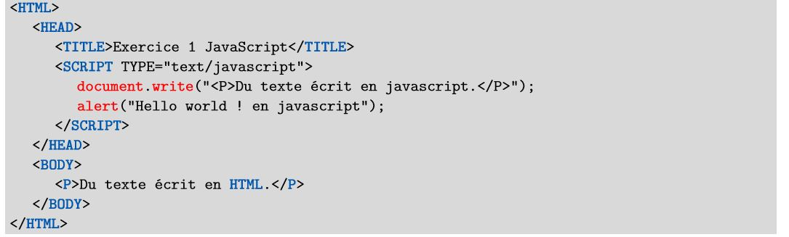

EXERCICE N°1.1 : code javascript interne au document
QUESTION 1. Créer le document à partir du code source fourni ci-dessous. Quelle est l’extension à donner à ce document?

REPONSE 1 :
- l’extension à donner à ce document est : .HTML
QUESTION 2.Tester dans un navigateur. Pourquoi le texte écrit en HTML ne s’affiche-t-il pas tout de suite?
REPONSE 2 :
- Tester
- Le texte écrit en HTML ne s’affiche pas tout de suite car la boîte de dialogue "alert" s'execute d'abord
QUESTION 3.Comment appelle-t-on le type de boîte de dialogue utilisé dans cet exemple?
REPONSE 3 :
- le type de boîte de dialogue utilisé dans cet exemple est la boîte de dialogue alert
QUESTION 4.Que se passe-t-il si on place le code javascript après le texte écrit en HTML?
REPONSE 4 :
- si on place le code javascript après le texte écrit en HTML, le resultat est le mêmê que celui de la reponse 3
EXERCICE N°1.2 : code javascript externe au document
QUESTION 5.Reprendre l’exemple précédent mais en plaçant le script dans un fichier externe script1.js. Tester dans un navigateur.
REPONSE 5 :
Exercice n°1.3 : code javascript dans des balises HTML
QUESTION 6.Afficher une boîte de dialogue modale lorsqu’on clique sur un lien. Le texte à afficher sera : « Vous venez de cliquer sur un lien! ».
REPONSE 6 :
Exercice n°1.4 : gestionnaire d’évènement en javascript
QUESTION 7 et 8. Créer le document à partir du code source fourni ci-dessous.
Quel est le nom de l’évènement géré ici par le code javascript? Tester dans un navigateur. Que se passe-t-il lors du chargement de la page dans un navigateur?
REPONSE 7 et 8 :
- Tester
- le nom de l’évènement géré ici par le code javascript est "onload"
- lors du chargement de la page dans un navigateur , nous constactons qu'une boîte de dialogue s'ouvre
QUESTION 9.Modifier l’exemple précédent pour qu’une boîte de dialogue modale affiche « À bientôt! » lorsqu’on quitte la page. Quel est alors le nom de l’évènement à gérer? Tester dans un navigateur le changement produit.
REPONSE 9 :
- Tester
- le nom de l’évènement géré ici par le code javascript est "onunload"
Exercice n°1.5 : les fonctions
QUESTION 10. Éditer le document HTML et le script dans un fichier externe script2.js. Tester dans
un navigateur.
REPONSE 10 :
Séquence n°2 : interactivité côté client
Exercice n°2.2 : modification du document
QUESTION 1. Écrire le document HTML et le code javascript permettant de réaliser le changement
d’image interacti
REPONSE 1 :
Exercice n°2.2 : modification du document
QUESTION 12. Écrire le document HTML et le code javascript permettant de réaliser l’affichage dynamique
de texte.
d’image interacti
REPONSE 12 :